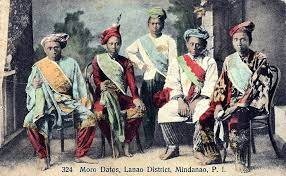
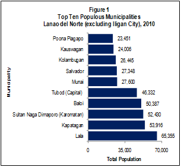
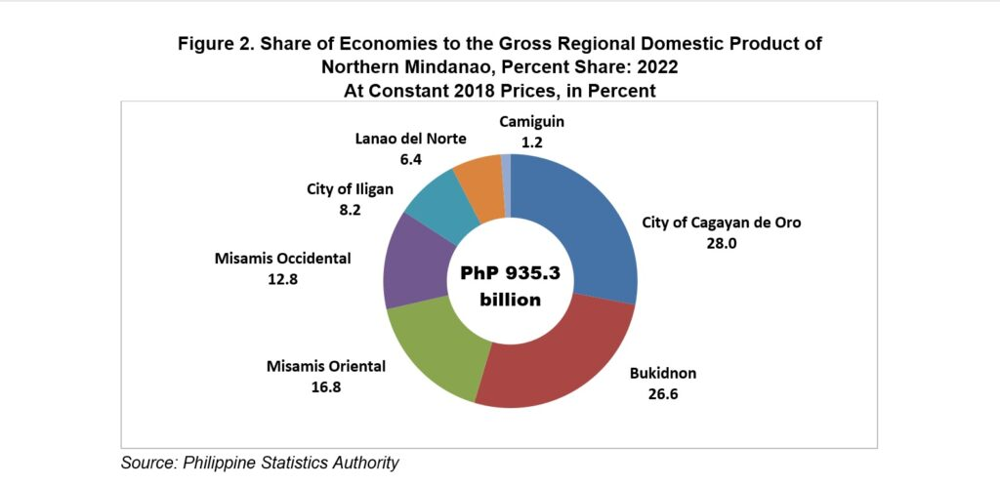
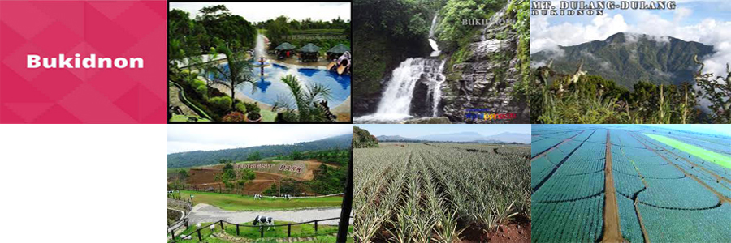

WELCOME TO YOUR DESTINATION
THE PROVINCE OF BOUNTY

HISTORY
The province of Lanao existed from 1914 until 1959. In 1959, Republic Act No. 222 was passed by the Philippine Congress, partitioning Lanao into two provinces: Lanao del Norte and Lanao del Sur. The new province was inaugurated on July 4, with Iligan City as its capital.In 1895, Lanao was created as a district of Mindanao. Lanao was incorporated into the Moro Province by the American government in 1903. In 1914, the province of Lanao was born with the organization of the Department of Mindanao and Sulu. Lanao was the site of some of the bloodiest revolts in Philippine history.
GEOGRAPHY
Like any Provinces in Mindanao, Lanao del Norte has a coastal to mountain ecosystems since the province lies along the coast of Iligan and Kolambugan Bays stretching up to the tip of Panguil Bay and extending to the coast of Illana Bay in the south.Lanao del Norte covers a total area of 3,346.57 square kilometres (1,292.12 sq mi) occupying the southwestern section of the Northern Mindanao region in Mindanao. When Iligan is included for geographical purposes, the province's land area is 4,159.94 square kilometres (1,606.16 sq mi).

DEMOGRAPHICS
he population of Lanao del Norte in the 2020 census was 722,902 people,[3] with a density of 220 inhabitants per square kilometre or 570 inhabitants per square mile. When Iligan is included for geographical purposes, the province's population is 1,019,013 people, with a density of 245 inhabitants per square kilometre (630/sq mi).The people in Lanao del Norte are a mixture of Maranaos and Cebuanos, with some Zamboangueños, Tausugs, Yakan, and Sama-Bajau. Historically, immigrants who came from the Christian provinces of Mindanao, Visayas and Luzon tended to settle in the northern part of Lanao while the Maranaos inhabited the south. There are also a minority of Higaonons settling in the hinterlands of Iligan. Kankanaey, an ethnic group from the Cordilleras in Luzon, can also be found as a minority in the province.[15]
ECONOMY
The economy in Lanao del Norte is predominantly based on agriculture and fishing. Factories are mostly based in Iligan City. Lanao del Norte is the home of Agus Power plants 4-7 that stretch from Balo-i to Iligan City. It serves major parts of power supply in Mindanao.[24][25] Tourism is also a growing economy in the province.
TOURISMS AND ATTRACTION
What is Lanao del Norte best known for? It is famously known as the home to waterfalls, lakes, valleys, and rich brackish water which yields the best crabs and seafood in the country.Why Lanao del Norte called Land of Beauty and Bounty? Lanao del Norte is also known as a “Land of Beauty and Bounty.” It is surrounded by many majestic waterfalls, relaxing coastal shores to the north towards the highlands and abundant mountains that rich in flora and fauna. It pulsates with the electrifying cultural diversity of kind and proud people.
SCHOOLS AND UNIVERSITIES
The Iligan Institute of Technology, commonly referred to as (Iligan Tech or MSU-IIT), is a public coeducational institution of higher learning and research university located in Iligan City, Philippines, charted in 1968 by Republic Act 5363 and integrated as the first autonomous unit of the Mindanao State University System in 1975.Currently, MSU-IIT has 7 Centers of Excellence designated by the Commission on Higher Education: Mathematics, Chemistry, Biology, Physics, Mechanical Engineering, Electronics Engineering and Teacher Education. It has also 11 CHED's Centers of Development: Filipino, History, Sociology, Information Technology, Statistics, Marine Biology, Civil Engineering, Chemical Engineering, Ceramics Engineering, Electrical Engineering and Metallurgical Engineering.